In Zig-Zag Numberlink, pairs of endpoints in a grid must be joined by vertex-disjoint paths that together visit every cell. The problem is NP-complete when the number of pairs is unbounded (Adcock et al.). For a single pair it is the Hamiltonian path problem in rectangular grid graphs, solved by Itai, Papadimitriou and Szwarcfiter. Two pairs on a rectangle form the paired 2-disjoint path cover problem. We settle the case of two pairs on rectangles with the endpoints anywhere in the grid. If both sides of the rectangle are at least 11, an instance is solvable if and only if no entry of a finite catalogue of forbidden patterns occurs. The catalogue consists of a parity condition, an alternation condition on the border, a handful of local corner and edge patterns, 65 listed corner configurations, and a rule that propagates forced routes out of the corners before testing alternation. If a side is at most 10, a frontier dynamic programming algorithm decides the instance in time linear in the long side. The characterization is constructive. Solutions are built by deleting empty lines, splitting the rectangle by straight cuts, and splicing the pieces back together, in time O((R+C) RC). Both directions of the characterization and the correctness of the dynamic programming algorithm are verified in Lean 4. The finite case analyses, which are window certificates for the corner configurations and a check of all irreducible instances with sides 11–22, are carried out by the Lean compiler via native decide. We describe the algorithm, the catalogue, the proof structure, the compromises made in the formalization, and implementations in Python, JavaScript and C that produce identical output.
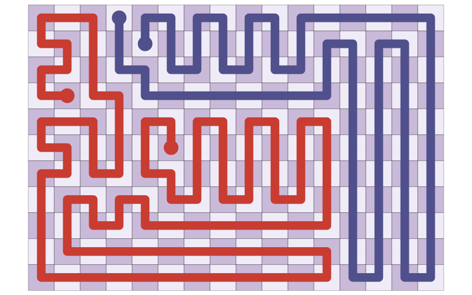
An instance is an \(R \times C\) grid of cells with four distinct endpoints. \(s_0, t_0\) have colour A (green) and \(s_1, t_1\) have colour B (orange). A solution is a pair of vertex-disjoint paths \(s_0 \to t_0\) and \(s_1 \to t_1\), moving between edge-adjacent cells, that together visit every cell of the grid. This is the two-colour case of Zig-Zag Numberlink, and the two-path case of the puzzle game Flow Free. In graph terms it is the paired 2-disjoint path cover problem on rectangular grid graphs.
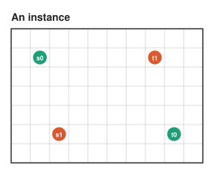
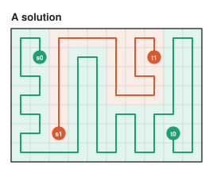
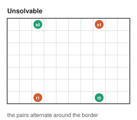
With unboundedly many colours the problem is NP-complete (Adcock et al. 2015). With one colour it asks for a Hamiltonian path between two given cells of a rectangle, which Itai, Papadimitriou and Szwarcfiter (1982) settled. Their condition, called IPS below, is a colour-compatibility test on the checkerboard plus three small forbidden families on rectangles with a side of length 1, 2 or 3. Two colours are the first case where the two paths can block each other, and where corners, borders and the relative order of the endpoints start to matter.
Thin rectangles. If \(\min(R, C) \le 10\), a frontier ("plug") dynamic program decides the instance and returns a solution, in time linear in the long side.
The domain \(\mathfrak{D}\). If \(R, C \ge 11\), the instance is solvable if and only if no entry of a finite catalogue of forbidden patterns occurs in it.
Construction. When an instance is solvable, a solution is built in \(O\big((R + C)\, R C\big)\) time.
Both directions of the characterization and the exactness of the plug DP are proved in Lean 4. Every step of the construction is one of a few operations on the grid. Empty lines are deleted, the grid is cut along a straight line, the pieces are solved on their own, and the pieces are glued back together. The rest of this page walks through the catalogue, those operations, an example, and the verification.
Each entry describes a placement of endpoints that no solution can have. Entries are stated up to symmetry. Each one also applies to its images under the 8 symmetries of the rectangle, to the instance with the colours swapped, and to the instance with \(s\) and \(t\) swapped within a colour. Below, \(a\) is a colour and \(\bar a\) is the other one.
Colour cell \((r, c)\) black when \(r + c\) is even and white otherwise, and write \(\sigma(x) = +1\) for a black cell and \(-1\) for a white one. A path alternates colours, so its endpoints' signs determine how many more black cells than white cells it covers. The two paths together cover the whole grid, which gives the parity condition P. Two endpoint pairs on the border that interleave cannot be joined without crossing, which gives the alternation condition T1.
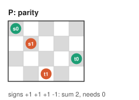
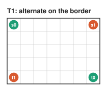
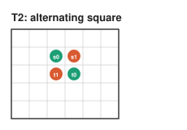
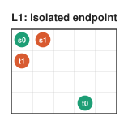
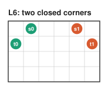
These are checked in each of the 8 corner frames (4 corners, 2 orientations each). In frame coordinates \((i, j)\), \(i\) counts lines in from the corner along one edge and \(j\) along the other. The cell marked "?" in L2, L3 and L5 is the corner cell that cannot be covered.
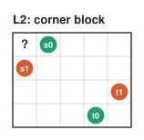
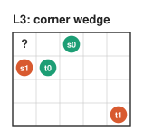
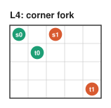
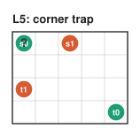
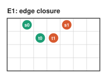
The remaining corner patterns do not have a short description, so they are listed. B is a list of triples \((p, q, r)\), with colour \(a\) at \(p\) and \(q\), \(\bar a\) at \(r\), and the other \(\bar a\) endpoint on the border outside the \(6 \times 6\) corner window (21 triples when \(RC\) is even, 5 when \(R\) and \(C\) are both odd). C lists 36 complete endpoint configurations near a corner for \(RC\) even, and D lists 3 for \(RC\) odd. That is 65 listed configurations in all. Each is proved unsolvable by an exhaustive window certificate, a finite check that covers every way the two paths can leave the corner window. The full lists are in the algorithm notes.
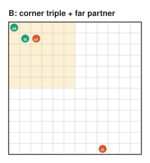
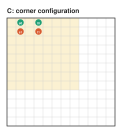
Some endpoints near a corner force the first steps of their path. Rule R1, R2 or R3 moves such an endpoint to where its forced route ends (dashed circle) and marks the cells the route uses as settled (grey). After the rules are applied in all 8 frames, the border of the unsettled region becomes a staircase near the corners. R fires when the moved endpoints all lie on that staircase border and their colours alternate along it, which is T1 for the smaller region.
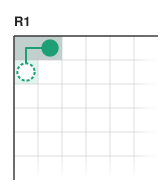
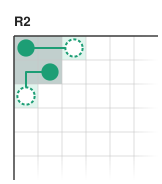
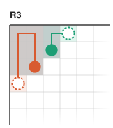
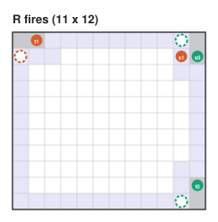
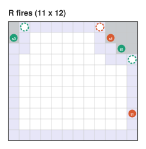
solve(I): # returns (path A, path B) or None
if min(R, C) <= 10: return plugDP(I)
if the catalogue fires on I: return None
if a reduction (S, K or I) deletes free lines d, d+1:
return bandExtend(solve(I minus lines d, d+1), d)
if a same-colour split exists: return its two Hamiltonian paths
m := first valid move of I # one exists, and both sides are <= 22
solve the pieces of m (Hamiltonian path / plug DP / solve), glue them
decide(I) := plugDP feasibility if thin, else "the catalogue does not fire"
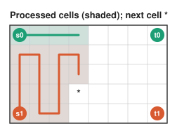
Transpose so the short side \(W \le 10\) runs down the columns, and process the cells column by column, top to bottom. The frontier between processed and unprocessed cells crosses \(W + 1\) edges. A state records which frontier edges a path uses, the colour of each, and how they are connected inside the processed region (matched like parentheses, since pieces cannot cross). Each cell takes the plugs coming from above and from the left and emits the plugs it still needs to the right and below. The number of states depends only on \(W\) (about \(10^5\) for \(W = 10\)), so the running time is linear in the long side. Walking back through the stored states recovers the paths.
A free line is a full row or column with no endpoint. On an axis of length \(n \ge 13\), two adjacent free lines are deleted when one of the rules below applies. The thresholds keep every catalogue entry's view unchanged (the \(8 \times 8\) corner windows, the order along the border, parity), so the smaller instance passes the catalogue whenever the original does. A side of length 23 or more always has a reduction. Every irreducible instance in \(\mathfrak{D}\) therefore has both sides in \([11, 22]\).
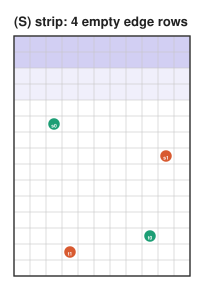
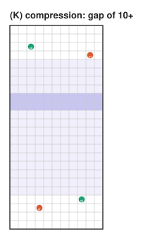
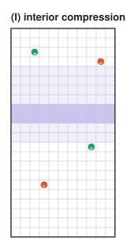
A solution of the smaller instance is extended by inserting two empty rows below a free row. Each path edge that crosses the insertion is stretched through the two new rows. The new rows split into blocks between consecutive crossings, and each crossing absorbs the block on one side with a U-shaped detour. At most one block is left over. It is absorbed by replacing a path edge along its top with the block's boundary cycle. A counting argument shows such an edge always exists.
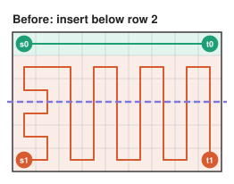
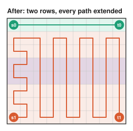
When no reduction applies, the grid is cut by a straight line. Where a path crosses the cut, the two cells on either side become virtual endpoints (dashed circles) of their pieces. A one-path piece must pass IPS and is solved as a Hamiltonian path. A two-path piece is solved by the plug DP if it is thin, or recursively if it is in \(\mathfrak{D}\) and passes the catalogue. The pieces' solutions are then joined at the crossings. A computer check, run inside Lean, found a valid move for every passing irreducible instance with sides 11 to 22.
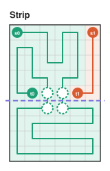
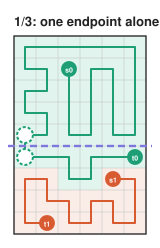
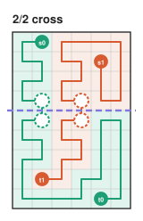
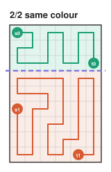
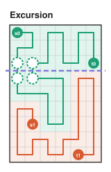
Each reduction removes two lines, so there are \(O(R + C)\) of them. Each costs a catalogue check and an \(O(RC)\) extension, for \(O\big((R + C)\,RC\big)\) in total. Moves only happen on boxes of bounded size and take constant time. The plug DP is linear in the long side, with a large constant at width 10.
A \(16 \times 13\) instance that passes the catalogue, solved step by step. This is the same example as in the video.
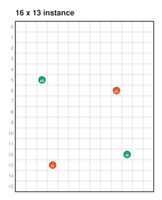
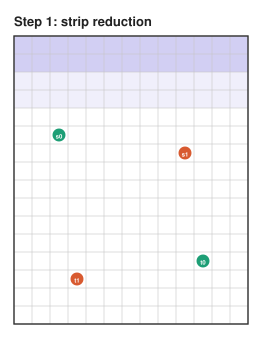
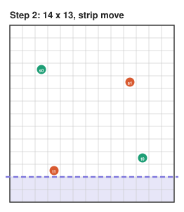
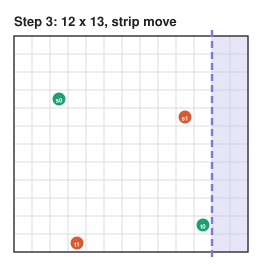
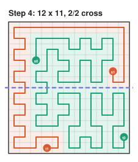
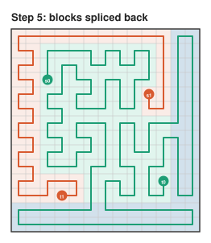
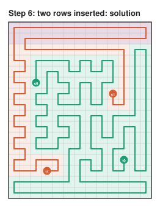
To reproduce it with the trace of every step:
python3 lib/python/zzn_cli.py 16 13 5 2 12 10 6 9 13 3 --grid --trace
The arguments are \(R\), \(C\) and the endpoints \(s_0, t_0, s_1, t_1\) as row-column pairs.
The definitions of instances, paths and solutions fit in about 60 lines
(lean/ZZN/Defs.lean).
Everything else is checked by Lean against them.
| Theorem | Statement |
|---|---|
passes_iff_solvable | For \(R, C \ge 11\), an instance is solvable if and only if the catalogue does not fire. |
thinBF_iff | The plug DP is exact (sound and complete). |
solvableB_iff | The combined decision procedure is correct for every rectangle. |
Soundness of the catalogue (an entry that fires means no solution) is proved by direct arguments for the global and local entries and by window certificates for B, C and D. Completeness (passing means solvable) is an induction on area. Reductions preserve passing and band extension carries solutions back. Irreducible instances have sides at most 22, and each of the 144 boxes of sides 11 to 22 is checked to have a valid move for every passing instance.
The 144 box checks and 10 window certificates are evaluated by native_decide,
which trusts the Lean compiler rather than the kernel.
They appear as 154 extra axioms.
thinBF_iff uses only the standard axioms propext,
Classical.choice and Quot.sound.
A full build takes about 4 hours on 4 threads.
The paper (Section 9) explains this choice and what a kernel check would cost.
The algorithm is implemented in Python, JavaScript and C, which take the same arguments and print the same output. A test harness runs all three on the same random instances and requires identical results, and each implementation's catalogue agrees with the Lean definition on 60,000 instances.
python3 lib/python/zzn_cli.py 12 12 0 0 0 11 11 0 11 11 --grid node lib/js/cli.js 12 12 0 0 0 11 11 0 11 11 --grid make -C lib/c && lib/c/zzn 12 12 0 0 0 11 11 0 11 11 --grid
Further reading in the repository.
Nearly the entirety of the work for this project was done by Claude (Opus 5.5), including writing the paper, the reference implementations, the Lean 4 proof and the explainer video. The author contributed little more than the problem statement and guidance.